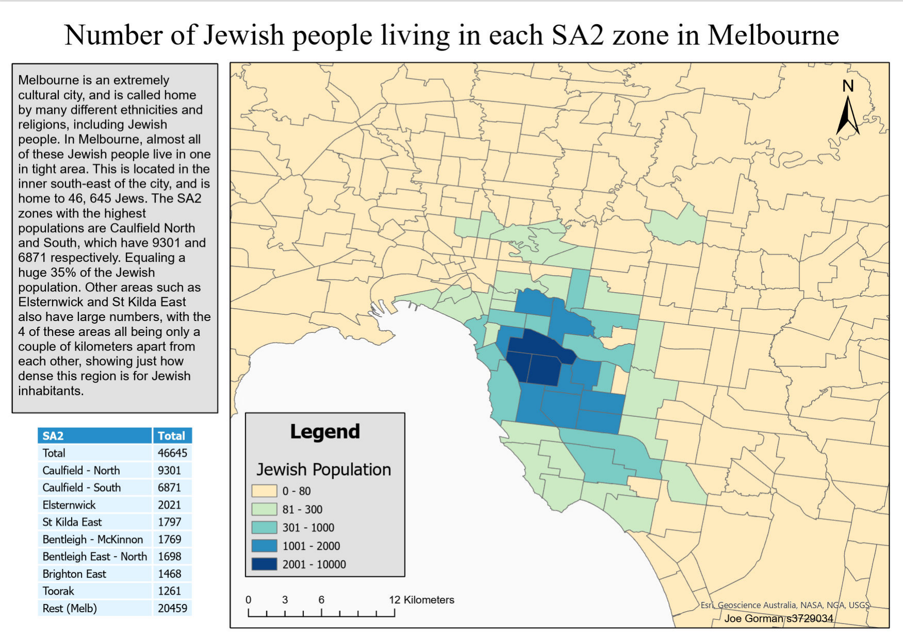
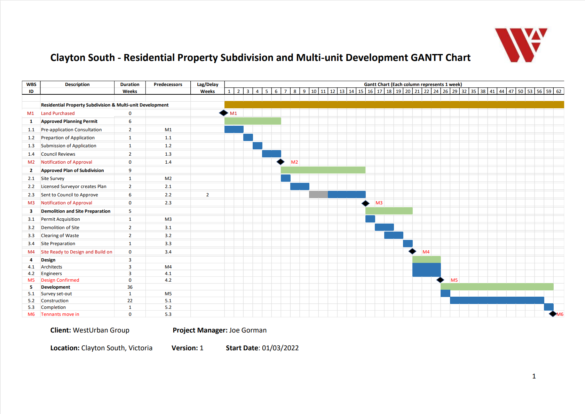
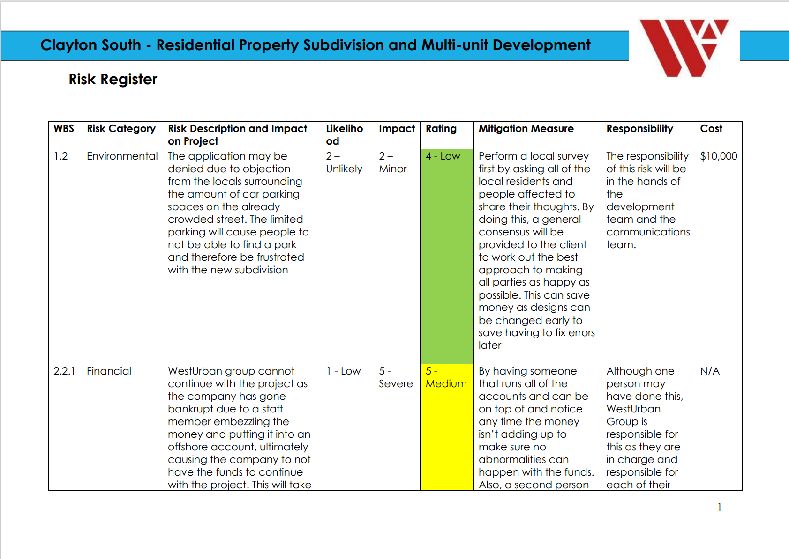
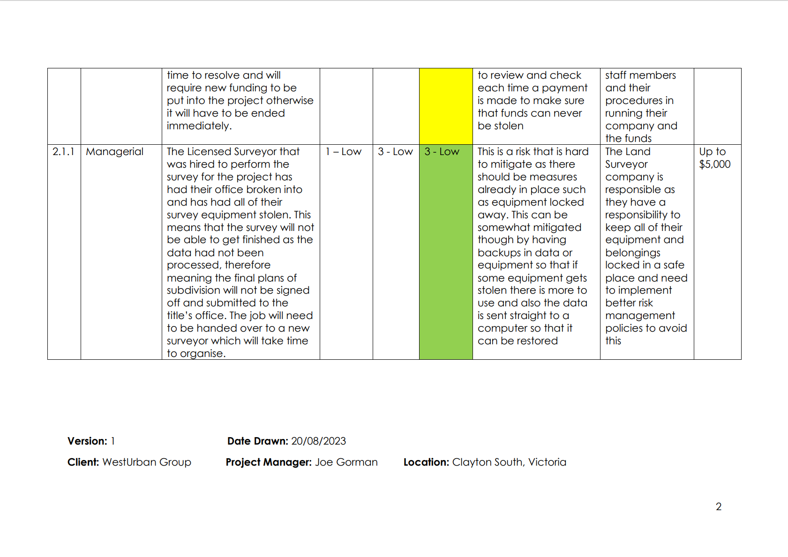

About
Welcome to the website for the Geoportfolio of Joe Gorman, which was made for the subject Professional Practice. This website will provide
information that is related to the field of geospatial science and also myself.
I was born and raised in a small country Victoria town, called Yarrawonga. This town lies on the Murray River, roughly 270km north of the city of Melbourne.
I am 24 years old and currently in my 4th and final year of The Bachelor of Surveying (Honours) and look forward to being able to work full time after this year.
I have a keen interest on surveying, and enjoy the challenges of problem-solving, performing set-outs and as-builts and other survey related tasks.
My favourite hobbies include fitness and playing sports. I enjoy playing football and hanging out with my friends. I have goals on travelling post uni and look forward to seeing the world.

Academic Portfolio Overview
Cartography
Cartography is a second year subject which consists of creating maps using different spatial data which is obtained from different sources and used to create relevant maps to the course structure and each assignment.
In this subject we created 3 major maps, which one of them is attached below. This map is one that I created relating to the living whereabouts of the Jewish community in Melbourne.
- Practical 3: Attached Thematic map of a demographic's population using data from the Australian Bureau of Statistics (ABS)
- Final Cartography Map: Bushfire danger in Northern NSW
Melbourne Map: Location of Jewish communities in subruban Melbourne

Project Management Concepts
Project Management Concepts is a class where the different structures and concepts related to being in charge of construction jobs is taught. By implementing these concepts and by performing group assignments, our learning is fast tracked and really helps convey the purpose of the subject.
This subject was completed in 2021, and is a second year elective which I had chosen. The majority of the learnings featured the Melbourne Metro Tunnel Project as the example case. We used this to provide resources for our own projects.
The main deliverables of the subject consisted of producing:
- Work Breakdown Structure (WBS)
- Gantt Chart
- Risk Register
- Final mini PMP
Gantt Chart (Timeline for milestones)

Risk Register


Industry Experience
This page will provide a brief overview of all my work experience (as of October 2023) within the Surveying industry. I have worked at two companies in my career, with my current one being worked at for over two and a half years. This company is called Auspat and my previous company was called North East Survey Design. I will provide details of what I have accomplished at each company.
North East Survey Design
Survey Assistant
January 2017 - February 2018
In my time at NESD, I learnt the basics and fundamentals of surveying. This was my first surveying job and prior to working here, I had no idea what the career entailed.
This company is located in Yarrawonga, where I grew up. In my time at NESD, I progressed from not knowing to do perform any tasks at all, to being able to go out and perform different tasks by myself.
As part of my survey work at NESD, my main role was to learn the basics and grow as a surveyor. I learnt how to setup and use equipment, perform feature surveys and boundary re-establishments and setting out subdivisions.
Auspat Land Survey Australia
Project Surveyor
April 2021 - Present (as of October 2023)
My work at Auspat involves being one of the main surveyors who can go to different job sites and be trusted to perform different jobs that sometimes can be critical works. When I first moved to Auspat, I had to almost start fresh, as the company uses a software called 12D to perform all tasks.
Auspat is a large company with almost 50 surveyors, and are enlisted with the various Government projects such as the Westgate Tunnel Project, The North East Link, various Level Crossing Removals among with others.
My role at the company is mainly in the field, performing many set-outs, as-built surveys, utilitie set-outs just to name a few.
Over my time at Auspat, I have progressed from needing someone to be with me to show me the rope and gain confidence, to now having my own work car, going out and talking to engineers by myself, and completing surveys by myself.
Skills and Proficiencies
 |
GIS |
 |
QGIS |
 |
Cartographic Principles |
 |
Adobe Illustrator |
|
Remote Sensing |
 |
Python Programming |
Credits and Attributions
The following programming languages and software were used to create the website
- HTML
- CSS
- JavaScript
- Visual Studio Basic
The deliverables contains content from the following subjects:
- Cartography 2
- Project Management Concepts
As per the policy of using the Flaticons with a free account, the attributions and crediting of the creators of the icons are as below:
Attributions of icons used: